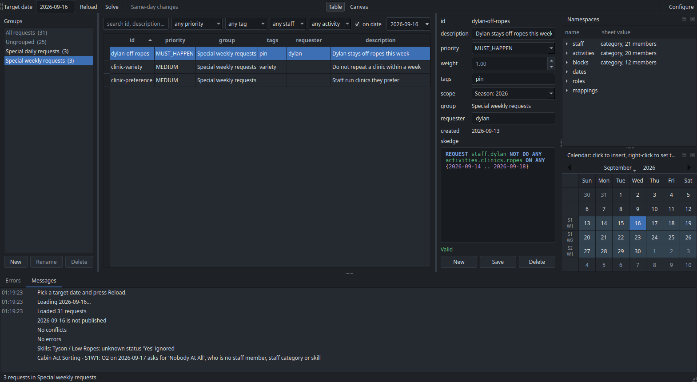
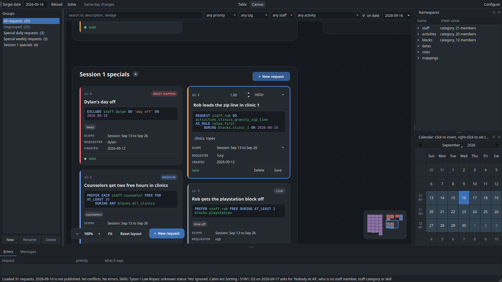
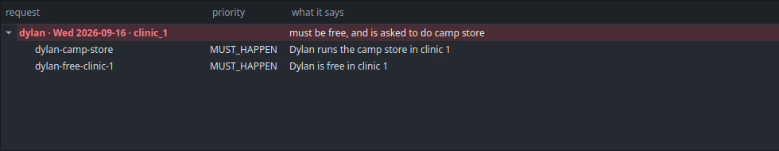
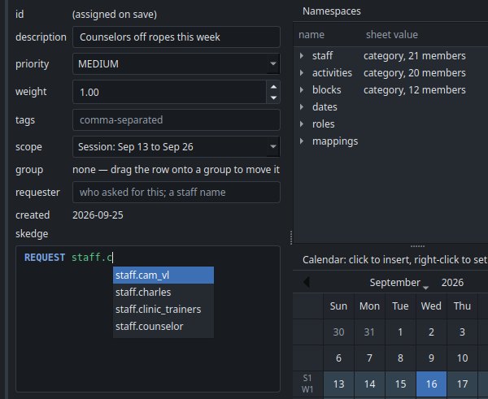

The request manager¶
puppet-strings app

Toolbar. Pick the target date (tomorrow by default). Only the Calendar is read when the
window opens, so the calendar panel is shaded and numbered from the start; Reload reads every sheet for the date shown, and again whenever it is pressed.
After the first Reload, changing the date reads the new day by itself.
Right-clicking a day in the calendar panel and choosing Set as target does both at once:
it makes that day the target and reads it.
The Calendar is read first and the date checked against it, so a date camp is not running
says so at once — naming the range the calendar covers and the nearest camp day — rather
than after a slow read of everything else. It is a prompt to pick another date, not a
failure: the window stays as it was, and the calendar panel shades the days you can choose.
Reading the sheets puts up a progress panel, the one the solver uses, without a Cancel
button: it cannot usefully be stopped part-way, but takes long enough over Google Sheets to
be worth saying so. It runs off the window's own thread, so the panel keeps painting and
the window stays alive while it works.
The day's clinics are asked for by one standing request, kept all season at CLINIC
priority:
REQUEST EACH activities.clinics.offerings
activities.clinics.offerings is the loaded date's Offerings tab, each clinic in the block it runs in, so the
one request asks for whatever that day offers; see
offerings. Each clinic is
staffed from its positions on Clinic_Data, and runs fully staffed or not at all.
Reload also makes the day's spreadsheet when it is not there yet, with its Offerings grid copied from the Clinic Schedule template and its other tabs empty. So a day nobody has set up is one click from being ready, and the next Reload reads what you put in the grid.
A clinic you add to the Offerings tab or take off it is asked for, or not, on the next
Reload. To ask for one clinic differently, for example to limit who runs it, leave its
offering out of REQUEST EACH activities.clinics.offerings and write it a request of its own. Solve builds the schedule and opens
it in a window with the staff view, the clinic view and the report; it asks first if the
date has no clinics offered.
Publish in that window writes the day's own spreadsheet in the
schedules tree, asking first if the date is already
published.
Cabin acts need no button. They are activities, read from every sheet in the Cabin Acts folder each time Reload runs. Two requests ask for all of them, one for the acts in the cabin act block and one for those the board moved to rest hour:
REQUEST EACH activities.cabin_acts.at_cabin_act DURING blocks.cabin_act
REQUEST EACH activities.cabin_acts.at_rest_hour DURING blocks.rest_hour
Each act's HEROES cell becomes its positions, so who may fill them is already written down. A hero nothing on the sheets answers to is reported with the other load warnings, naming the cabin and the day. See The sheets for the grid they come from.
Configure, on the right-hand end of the toolbar, is where the Google account and the sheets are chosen. See Install and set up. Its Requests row hands the requests over and backs them up; see Requests. It also has Open trainer, which starts the trainer in a window of its own.
Same-day changes. Once the day on screen is published, the toolbar offers Same-day changes and Who is off today…. See Same-day changes.
Canvas¶
Table and Canvas, at the right-hand end of the toolbar, switch how the requests are
shown. The window remembers which one you used last. On the canvas, every request that passes
the filters is a card, and each group is a frame of cards. The groups are laid out in rows,
and Ungrouped stands apart to their left. Everything else stays where it is: the groups
pane, the filters, the Namespaces and Calendar panes, and the Errors and Messages tabs.

- Moving around. Scroll to zoom at the pointer. Drag the empty canvas to pan (or drag with the middle button, or with Space held). Click or drag the minimap to jump somewhere; it opens out under the pointer for a finer aim. F shows everything, Ctrl+1 is actual size, and + and − zoom. Picking a group in the groups pane takes you to its frame. Until you move the camera, it keeps everything in view as the requests change.
- Editing. Click a card and type. The card turns into the editor, with the cursor in the field you clicked. A card clicked from far away is brought up to full size first. Clicking away saves it, and so does Ctrl+S. Nothing is checked while you type; a card that does not validate is saved all the same and says why on its bottom line, and a solve leaves it out until it is fixed. Escape puts it back to how it was saved.
- New requests. Press New request beside the zoom controls or in a frame's header, double-click inside a frame, or press N for the group nearest the middle of the view. A new card left empty is thrown away. New cards go at the front of their frame, and stay where they are once saved for as long as you are zoomed in far enough to read the cards in full, so several written in a row do not jump about. Zoom out past that and they move to their priority's place with the rest.
- Moving and deleting. Drag a card onto another frame, or onto a group in the groups pane, to move it to that group. Shift-click, or Shift-drag a box, to pick several. Delete deletes the cards picked, after asking.
- Arranging the groups. Zoom out until the cards are plain blocks, then drag anywhere on a group to move the whole group. At that distance a drag moves groups; close enough to read the cards, it moves cards. Groups stay where you put them, even between runs. Reset layout, beside the zoom controls, puts them all back. It only shows once a group has been moved.
From far away, a card shows its priority and description in large type. From further out still, it is a block of its priority's colour, so you can see a group's shape and find the one you want.
Groups¶
The groups pane. Down the left-hand side is every group of requests, with how many
requests are in each. Click one and the table shows only that group. All requests and
Ungrouped head the list and are not groups themselves: Ungrouped is whatever is in no
group at all, which is how a request that has been forgotten about turns up.
Two groups are always there — Special daily requests and Special weekly requests — and you make the rest. New asks for a name, Rename renames a group everywhere it is used, and Delete takes a group off its requests without deleting the requests themselves. The two default groups cannot be renamed or deleted.
A request sits on one shelf, the way a piece of paper is in one folder, or on none.
Groups and tags are separate, so a request in the Ropes rewrite group can still be
tagged legal, and a request that is about several things is a job for tags.
There are two ways a request gets its group, and no others:
- A new request joins the group being shown. Pick the group first, then New.
- Drag its row onto a group's label to move it. Select one row or several, drag them
across to the pane, and let go over the group they should be on. What travels with the
pointer is a small card naming the first request, with a count on its corner when there
are more, and the group a drop would land on is outlined as the pointer passes over it.
Dropping them on
Ungroupedtakes them off every shelf. The status line says how many moved.All requestsis not a shelf, so the pointer shows a refusal over it; hold the drag at the top or the bottom of the list and it scrolls, so a group below the fold can be dropped on like any other.
Right-click a group to choose the scope its new requests take — a group of standing agreements can scope its requests to the season without your having to remember each time. Requests already made keep theirs: a request's scope is when it applies, and changing a group's default is not a reason to move them.
A request's group is saved with it, so it is there again the next time the app opens. A group you have just made and put nothing in yet stays in the pane until you close the app.
The table. One row per request. Click a column heading to sort by it. Filters above it: free text over id, description, Skedge and requester; priority; tag; staff; activity; and a date. These narrow whatever group is showing, so the group is the shelf and the filters are the search. The number beside each group counts the requests in it that the filters let through, which is how many rows picking it would show. To ask how far a request reaches, filter by the date itself.
on date is ticked to begin with, and starts on the date being scheduled and follows it, because that is the day you are almost always asking about. Ticked, the table shows the requests read on that date that are about it; a request that does not validate is shown whatever the date, so it cannot hide from the view you would fix it in. Moving the filter to look at another day leaves the target date alone, so you can check next Monday without changing what Solve would build.
Unticked, the table lists every request in the file, whatever date it is scoped to: other days' clinics, other sessions' requests, all of them. The ones scoped away from the target date can be opened, edited, moved between groups and deleted, but Solve only ever uses the ones read on the target date. This works with no date loaded too, before the first Reload or on a date camp is not running: ticked, the table is empty, since nothing happens on that date; unticked, it lists every request. Editing one needs a camp day loaded, since that is what its Skedge is checked against.
The staff and activity filters use the names a request resolves to, so filtering by
dylan finds requests written for staff.counselor as well.
Errors¶
Along the bottom are two tabs, Errors and Messages.
Messages is everything the window has to say, each message with the time it was said and each part on a line of its own: after a load, the requests read, whether the day is published, the conflicts, the errors and each warning about the sheets.
The errors pane. Along the bottom, everything wrong with the requests that can be seen without solving. Two kinds of thing sit in it: conflicts, where two requests cannot both be kept, and errors, where one request on its own asks for something the sheets rule out. Both name a slot and the requests to go and look at, and double-clicking a row opens that request in the editor.
Conflicts¶
Every place two requests contradict each other. Each heading is one collision — one person, one date, one block — and everything under it belongs to that collision: the requests caught in it and the reasons they cannot all hold. A request in two collisions appears under both. Double-click one to open it in the editor.
A conflict means the day cannot be built at all, so only MUST_HAPPEN requests make
one. Two requests of any lower priority wanting different things of the same person in the
same block is not a conflict: the solver keeps the one worth more and says in the report
that it could not meet the other, and the day still comes out. There have to be at least
two requests that must happen, about one person, in one block, on one date, asking for
things that cannot both be true.
| What it catches | Example |
|---|---|
| Asked to work and to be free | REQUEST staff.dylan DO activities.clinics.riflery DURING blocks.clinic_1 beside REQUEST staff.dylan FREE DURING blocks.clinic_1 |
| Asked to do something and told not to | the same, beside REQUEST staff.dylan NOT DO ANY activities.clinics.weapons |
| Asked to be free and to be busy | FREE beside BUSY in one block |
| Two things at once that do not fit | two FOR tasks whose minutes exceed the block, or two clinics in one block |

Sharing a slot is not by itself a collision: two requests asking for the same clinic agree, and two half-hour tasks fit in one block quite happily. What they say has to be impossible.
It also reads only what is settled. REQUEST ANY 1 staff DO …, DURING ANY
2 blocks and every PREFER leave the solver room to move, and moving things around each
other is its job, so they are never reported. What is left is worth looking at: a request
saved into a collision says so in the toolbar as it saves. One request may hold several
statements, so it can also contradict itself, and that shows up the same way.
Errors¶
One request, on its own, asking for something that cannot happen. Every name in it exists — the validator has already said so — and it is still wrong:
| What it catches | Example |
|---|---|
| Somebody who is not checked off | REQUEST staff.henry DO activities.clinics.aerial_silks DURING blocks.clinic_3 when Henry has no aerial silks checkoff, or not the RAL the position needs, or is not one of the people a cabin act's card asks for |
| A position the activity does not have | AS_ROLE roles.third on a clinic with two positions |
| A clinic the day does not run then | DURING blocks.clinic_3 when the day's Offerings tab runs it in clinic 1, or does not run it at all |
| Work asked of somebody who is away | a request naming somebody an EXCLUDE has taken out of that block |
The error says which sheet answers it — the Skills sheet for a checkoff, the day's Offerings tab for a block — and, where the day runs the clinic somewhere else, which block that is, since that is usually what was meant.
The same two rules apply as to conflicts. Only what is settled is read: ANY 1
staff names nobody in particular, so nobody in particular is unqualified — the solver
picks somebody who is checked off, and that is its job. And a day with nothing offered yet
is not a day of errors: until its Offerings tab is filled in nothing is offered, which
is one thing to see to rather than fifty.
Asking for somebody who is not checked off is not a MUST_HAPPEN question, so an error is
listed whatever the request's priority: at MUST_HAPPEN the day will not solve, and at any
other priority the request is simply never met, which is worth knowing before rather than
after.
The pane is not a substitute for solving. It finds what is plain on paper; the solver finds the rest and names the requests it could not meet.
The editor. One field per request column and a Skedge editor with highlighting.
group says which shelf the request is on and is not a field you fill in — the pane is
where that is decided. requester records who asked for it — type a staff name and it
completes, the same names staff. gives you in the Skedge box. A requester who is not on
the Skills sheet makes the request invalid, which saving says, so a misremembered name is
caught rather than forgotten. description is for people and may be left empty.
The id is given on the first save and never changes afterwards; it is what the solver's
report refers to. It is the next free number on the tab the request is written to — s4-1,
s4-2, season-1 — and is not made out of the description, so rewording a request
does not rename it and a request needs no description at all.
Nothing is checked while you type: half-written Skedge is always wrong, and being told
so at every pause is noise. The request is checked when you save it (Save, or Ctrl+S) and
saved whatever the check finds. The line under the editor then says
✓ Saved s1-12 at 14:32:05, in green, with the time, so a second save of the same request
still visibly does something; or, in red, what is wrong with it and where: a request that
does not validate is kept, and a solve leaves it out and says so in its report until it is
fixed. Until you save, the line says nothing: not for a new request, and not for one you
open. A card on the canvas still says on its bottom line how a saved request stands.
New starts a
fresh request; Delete removes the one being edited. To delete several, select their
rows in the table and press the Delete key; a popup lists them and asks first. Saving is
instant: requests are kept on this computer, not in a sheet. The scope box chooses the
days a request is read on: this date, its week, its session (the default for a new one), or
the season.
The scope follows the ON. As you write a Skedge whose ON names particular dates, the
scope box moves to the narrowest scope that holds them all: ON 2026-09-24 scopes the
request to that day, ON ANY {2026-09-14 .. 2026-09-18} to that week, a range across weeks
to the session. The line under the editor says when it does. An ON that moves with the
date being scheduled, such as dates.target - 6d .. dates.target, asks the same of every
day, so it leaves the scope alone; so does opening a request, and so does picking a scope
yourself, which then stays for that request. A request is only read on its scope's days,
so it cannot be saved with a scope that misses a date its ON names: a box says which
days, and offers the scope that holds them. Keep editing goes back to the request.
Name completion. Start typing any part of a name in the Skedge box and a list of names
appears and narrows as you keep typing. The namespace is optional: dyl finds
staff.dylan, clinic_3 finds blocks.clinic_3, and riflery finds
activities.clinics.riflery. Typing a namespace and a dot, such as staff., lists
everything in it.

Enter or Tab takes the highlighted name, Escape closes the list. The names offered are exactly the ones the validator accepts, so anything the list gives you is spelled right.Keywords are not looked up, so do is a word being written rather than a search.
Namespaces. The panel on the right lists every valid name with a one-line note: a staff member's name, how many members a category has, a block's times, a date. Press Enter, or right-click, to insert the highlighted name at the cursor.
Double-click a name to open it, which answers what the one-line note cannot:
| Name | What opens |
|---|---|
| A staff member | Where they stand on every skill they have a mark against — a tick for a checkoff, and otherwise the sheet's own word, WCF or w/ scaf — and every category they are in |
| A staff category | Its members |
| A clinic | What each position asks for, and everyone on the sheets who could hold it |
| A cabin act | The same, for the day being scheduled, plus what the cabin act board wrote on its card. A cabin with nothing on that day says which days it does have |
| A mapping | Its table, with each key column headed by the set it takes, and what a key with no row gives: a number for a numeric mapping, a Skedge phrase such as ANY 1 {staff.office} for any other. You can edit both; Save writes the table to the mapping tab and the default to the Mappings tab |
| A date or a role | Nothing. A date's note is the date and a role is a word |
Opening an activity is worth the habit, since a request for one names nobody: it is where you check that the people you expect are the people it can have.
Publish writes the day out with a panel up saying so, and puts the window back when it is done. If Google says the writing is coming too fast — it allows sixty writes a minute per person — it waits and tries again rather than giving up on a half-written day.
Reload reads the day: the sheets every pane and every request is checked against. What was published on the days before it is the solver's business alone, so it is not waited for — it is fetched in the background as soon as the load finishes, and is usually there before Solve is pressed. Pressing Solve sooner reads it then instead.
Calendar. Below the names, a calendar with camp days (the dates on the Calendar sheet)
shaded. Down its left-hand side, each week is labelled with the session and week it is,
S4 over W2, taken from the Calendar sheet — the numbers dates.session_4.week_2
is built from, rather than the week of the year. Click any date to insert it into the
Skedge editor at the cursor, as 2026-06-15.
Its rows begin on the weekday the span being looked at begins on, so that a row is one week of one session and the label beside it is true of all seven days. Camp's weeks start on a Sunday, and so does the pane before any sheet has been read, whatever the machine's own idea of the first day of the week is.
Saving a request about other dates. A request does not have to be about the date being
scheduled: ON ALL dates.session_2.week_1 is a perfectly good request to write in
the middle of session 1. It will do nothing to the schedule you are about to solve, though,
which is easy to write by accident — a mistyped date, or session_2 where you meant
session_1. So saving such a request asks first, names the dates it is about, and
lets you either save it anyway or go back to editing.